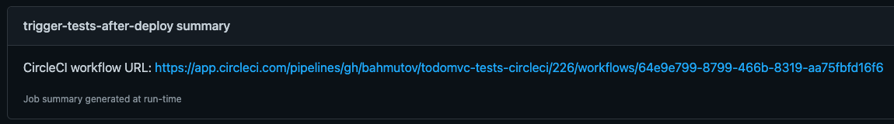

Recently GitHub Actions went into general availability with very generous usage limits for public repositories, and I have started playing with them. Here are a couple of experiments.
- Fixing code formatting
- Action versioning
- NPM or Yarn install
- Testing on every OS
- End-to-end testing
- NPM publishing
- Badges
- Set commit status
- Deploying GitHub Pages
- Running a job on specific branch
- Running a command step only on specific branch
- Running periodic jobs
- Job dependencies
- Skip a job
- Manual dispatch
- Reusable workflows
- Print the event
- Use environment variables as action inputs
- set-output is deprecated
- Job summary
- Run workflow on specific branch
- Cast string to a number
- More examples
Note: I have covered the topics below in my recent talk GitHub Actions in Actions, slides.
Fixing code formatting
It is easy to forget to format code before pushing it to GitHub. I usually use husky pre-commit hooks with lint-staged but that requires configuration. It would be so much simpler if continuous integration server could run the formatting task and if there were any changed files, would commit and push them to the source repository, fixing any problems. Turns out, this is pretty (pun intended) simple as the example repo bahmutov/gh-action-with-prettier shows. Here is the .github/workflows/ci.yml file.
1 | name: Prettier |
The above steps check out the remote source code, install NPM modules (with caching using actions/cache helper), then run Prettier via npm run format and finally use action mikeal/publish-to-github-action I have found at GitHub Marketplace. This action is super simple - it is a code I usually have written myself to commit local changes and push to remote, see its entrypoint.sh.
The integration of code repository (in this case GitHub) with CI (GitHub Actions) is very convenient from the security point of view. In this case, a secret GITHUB_TOKEN is automatically injected by the CI - allowing us to easily interact with the remote repository, no extra steps necessary.

Update: I now prefer using stefanzweifel/git-auto-commit-action to commit and push any changed files.
1 | # if there are any updated PNG images, commit and push them |
Action versioning
Actions are fetched directly from GitHub repositories, not from NPM. Thus you can specify what action to use using a branch name, tag or commit.
1 | steps: |
I recommend using either latest published branch like:
1 | - uses: actions/setup-node@v1 |
Security
Using branch tags is dangerous though, read this post since you can execute unknown code when the tag changes. Thus if you want to sleep slightly better at night, please use the full commit sha of the actions you have reviewed.
NPM or Yarn install
GitHub has published Actions Toolkit for writing actions using JavaScript or TypeScript. This is excellent - always bet on JavaScript! The only problem - some actions for a typical Node project require quite a bit of copy / paste code. For example, every Node project needs to cache ~/.npm folder, thus it needs the following boilerplate action.
1 | - name: Cache node modules |
Ughh, wouldn't it be nice to have nice reusable "Install NPM modules and cache them, please" action? Unfortunately, action/cache itself is an action - and cannot be used from JavaScript ☹️. There is a little bit of discussion here on the issue I have opened, but worry not - Open Source to the rescue. I have cloned actions/cache into cypress-io/github-actions-cache and have refactored the code in branch reusable-functions to allow using restoreCache and saveCache functions from other JavaScript code. Easy-peasy.
Let's write npm-install action - here is the main logic of the action
1 | restoreCachedNpm() |
If the previously cached ~/.npm or ~/.cache/yarn depending on the presence of yarn.lock folder was successfully restored, then we perform immutable install using npm ci or yarn --frozen-lockfile command and are done. If the cache hit was missed, then we need to save the NPM modues folder in action's cache.
Restoring and saving NPM cache folder functions use the forked cache module and rely on platform and lock file hash to know when a new cache is necessary.
1 | const hasha = require('hasha') |
Building action
Because the action needs to be ready to go, you need to bundle the action using zeti/ncc for example. Thus the action's package.json file includes the build script.
1 | { |
The generated dist folder is checked in - because GitHub actions are fetched straight from GitHub source, no from NPM registry. For publishing I use another GitHub action cycjimmy/semantic-release-action that tags and pushes new releases on GitHub and also update v<major version> branch, like v1 to always point at the latest release.
Finally, I have described action's main properties in action.yml and published it on GitHub Marketplace.

You can see this action in ... action at bahmutov/npm-install-action-example/actions. The CI file is simple
1 | name: main |
Name bahmutov/npm-install@v1 refers to branch v1 of the GitHub repository bahmutov/npm-install where the latest semantic release is pushed. On the first build, the cache is empty, and npm ci has to fetch NPM modules from the registry. Then the folder ~/.npm is cached.

On the second build, the cache is hit, and npm ci is faster - because it uses only modules from the restored ~/.npm folder, and then skips saving unchanged cache folder.

Nice, feel free to use this action from your projects, and open new issue if you find a problem. You can also build your own actions using the exported NPM function.
Testing on every OS
You can run the same job on every OS using matrix strategy
1 | jobs: |
End-to-end testing
Finally, I have written cypress-io/github-action to make running Cypress tests on GitHub super simple. Here is how to run tests on a single Linux machine
1 | name: End-to-end tests |
Here is more complicated case: running tests in parallel in load balancing mode
1 | name: Parallel Cypress Tests |
Super simple and even works across Windows, Mac and Linux machines on CI, see Cypress GitHub Action examples.
NPM publishing
If you are a fan of semantic versioning like I am, you are probably using semantic-release to publish NPM packages automatically from CI. This type of release becomes even simpler with GitHub actions thanks to cycjimmy/semantic-release-action.
First, go to https://www.npmjs.com/settings/
Second, go to the project's Settings / Secrets and add a new secret with name NPM_TOKEN and paste the NPM auth token from the clipboard.
Add the following step to your workflow
1 | # after test step |
The GITHUB_TOKEN secret is automatically created and injected by the GH Action App in your repository, you don't need to create it. Each time there is a Git commit on the main branch since the last release, the above action will publish new NPM version and will create a GitHub release. See example in action in repo bahmutov/cy-spok, where you can see github-actions user publishing releases.

Badges
You can add GH Action badge to your README file. I prefer using the syntax that includes workflow name and explicit branch:
1 | https://github.com/<OWNER>/<REPOSITORY>/workflows/<WORKFLOW_NAME>/badge.svg?branch=<BRANCH> |

If you want to use badge as a link and go to the Actions tab of the repo, I like separating the urls into their own lines.
1 | [![ci status][ci image]][ci url] |
One thing I like doing is creating separate workflows for the same project and putting multiple badges in the same README. If there are example projects, we could put their badges there too. This creates a single CI status "dashboard" in the Markdown file, something I have recommended a long time ago


Set commit status
You can set commit status using GitHub REST API, if you know GH repository and commit SHA and have a token with permissions. A REST call using curl would look like this:
1 | curl --request POST \ |
When running on GitHub Actions, the repository and sha are already set via default environment variables, and the user can pass the GITHUB_TOKEN created by the GH App itself.
1 | # reads GITHUB_REPOSITORY and GITHUB_SHA from environment |
See implementation in bahmutov/check-code-coverage.

Deploying GitHub Pages
I like using peaceiris/actions-gh-pages to deploy the repository or a single folder to GitHub pages.
1 | - name: Deploy 🚀 |
Running a job on specific branch
You can run a specific job only when doing a push to a branch using if syntax
1 | deploy: |
Running a command step only on specific branch
The same approach works for individual steps:
1 | - name: Publish Image |
Running periodic jobs
You can use cron syntax to run the workflow periodically. For example, to run the tests every night use the following workflow trigger syntax:
1 | on: |
Job dependencies
A job can require other job(s) to successfully finish first
1 | jobs: |
If you have a single required job:
1 | release: |
Example CI workflow from bahmutov/cypress-wait-if-happens
1 | name: ci |
See Workflow syntax.
Skip a job
You can skip a step or a job using a false expression. For example, to skip a job
1 | test-js: |
Manual dispatch
You can start a workflow from the web GUI, and even provide the input parameters. It is really convenient for kicking off complex workflows by a casual user. See the GitHub announcement.
See examples in the blog posts How to Keep Cypress Tests in Another Repo While Using GitHub Actions, How To Tag And Run End-to-End Tests,Faster test execution with cypress-grep.
1 | on: |
Reusable workflows
A really powerful new feature from GH - reusable workflows. See the blog post The Simplest CI Setup For Running Cypress Tests for details, but here is how to use a public workflow from bahmutov/cypress-workflows repo:
1 | name: ci |
Print the event
You can print the environment variables starting with GITHUB and the entire github object available to the action
1 | - name: Print GitHub variables 🖨 |
Or even simpler:
1 | - name: Dump GitHub event |
Use environment variables as action inputs
The simplest way to use the environment variables as actions inputs is by exporting them as outputs of another step
1 | - name: Export CI build id 📤 |
See GitHub answer.
Even simpler is to use the expression directly:
1 | - name: Cypress run 🧪 |
set-output is deprecated
The following command set-output has been deprecated.
You can even output using normal console.log statements, for example see trigger-circleci-pipeline
1 | console.log(`::set-output name=CircleCIWorkflowUrl::${url}`) |
You can use the output from other job steps
1 | - name: Trigger the deployment |
Job summary
In addition to step outputs, you can output nice Markdown text as job summary following the syntax. This example comes from trigger-circleci-pipeline
1 | const url = getWebAppUrl(w) |

Run workflow on specific branch
To run the workflow on the main branch only
1 | name: Scrape |
To run the workflow on all branches, but the backup branch
1 | name: Scrape |
Cast string to a number
All input parameters in the manual dispatch workflow seem to be strings.
1 | on: |
The print event inputs step shows all strings
1 | jobs: |
1 | { |
In the blog post Trigger Selected Cypress Specs Using GitHub Actions I pass the input from the workflow to a reusable workflow that needs a number. The only way to cast the string value "machines" into a number for "n" was via JSON:
1 | specs: |
More examples
- Run And Trigger GitHub Workflow
- Versioned Docs Pages
- Test the Preview Vercel Deploys
- Open or merge pull requests automatically
- A great tutorial about using and building actions in 30 (!) parts from Edward Thomson is here
- while working on a GitHub action, you can unit test it, but also apply the action to examples in subfolders that act like end-to-end examples. See bahmutov/npm-install Testing section
- test a static site deployed to GitHub Pages before (twice) and after deploy in blog post Triple Tested Static Site Deployed to GitHub Pages Using GitHub Actions
- Trying Lighthouse